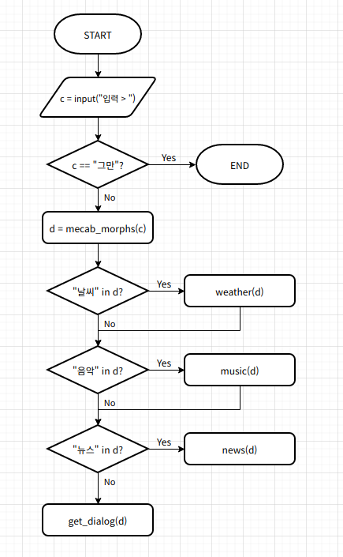

Speech¶
chatbot_test.py¶
입력한 문장에 대해 형태소 분석을 실시하여 파이보와 대화를 시작합니다.
사용자가 입력한 문장에 db의 key 값(날씨, 음악, 뉴스)이 있으면 해당 함수를 실행하고, 없다면 대화봇을 실행합니다.
from openpibo.speech import Dialog
def weather(cmd):
lst, _type = ["오늘", "내일"], None
# 분석한 문장 중 "오늘", "내일"이 있다면 _type=item으로 설정
for item in lst:
if item in cmd:
_type = item
if _type == None:
print("BOT > 오늘, 내일 날씨만 가능해요. ")
else:
print("BOT > {} 뉴스 알려줄게요.".format(_type))
def music(cmd):
lst, _type = ["발라드", "댄스", "락"], None
# 분석한 문장 중 "발라드", "댄스", "락"이 있다면 _type=item으로 설정
for item in lst:
if item in cmd:
_type = item
if _type == None:
print("BOT > 발라드, 락, 댄스 음악만 가능해요.")
else:
print("BOT > {} 음악 틀어줄게요.".format(_type))
def news(cmd):
lst, _type = ["경제", "스포츠", "문화"], None
# 분석한 문장 중 "경제", "스포츠", "문화"가 있다면 _type=item으로 설정
for item in lst:
if item in cmd:
_type = item
if _type == None:
print("BOT > 경제, 문화, 스포츠 뉴스만 가능해요.")
else:
print("BOT > {} 뉴스 알려줄게요.".format(_type))
db = {
"날씨":weather,
"음악":music,
"뉴스":news,
}
# 사용자가 입력한 문장에 대해 형태소 분석을 실시하여 파이보가 실행하는 함수가 달라짐
def main():
obj = Dialog()
print("대화 시작합니다.")
while True:
c = input("입력 > ")
matched = False
if c == "그만":
break
# 사용자가 입력한 질문에 대한 형태소 분석
d = obj.mecab_morphs(c)
# print("형태소 분석: ", d)
# 분석한 문장 중 "날씨", "음악", "뉴스"가 있다면 해당 key값의 함수 실행
for key in db.keys():
if key in d:
db[key](d)
matched = True
# key 값이 없다면 대화봇 실행
if matched == False:
print("대화봇 > ", obj.get_dialog(c))
if __name__ == "__main__":
main()

chatbot_test.py 실행
pi@raspberrypi:~/openpibo-examples/speech $ sudo python3 chatbot_test.py
chatbot_test.py 결과
대화 시작합니다.
입력 > 댄스 음악 추천해줘
BOT > 댄스 음악 틀어줄게요.
입력 > 주말에 뭐하지
대화봇 > 사탕 만들어요.
입력 > 사탕 싫어
대화봇 > 싫어하지 말아요.
입력 > 그만
mecab_test.py¶
사용자가 입력한 문장을 분석합니다. 3가지 모드 선택이 가능합니다.
from openpibo.speech import Dialog
# mode(pos, morphs, nouns)에 따른 문장 분석
def mecab_f(string, mode):
print("Input: ", string)
obj = Dialog()
if mode == "pos":
data = obj.mecab_pos(string)
elif mode == "morphs":
data = obj.mecab_morphs(string)
elif mode == "nouns":
data = obj.mecab_nouns(string)
print("Output: ", data)
if __name__ == "__main__":
mecab_f("아버지 가방에 들어가신다", "nouns")
mecab_test.py 실행
pi@raspberrypi:~/openpibo-examples/speech $ sudo python3 mecab_test.py
mecab_test.py 결과
Input: 아버지 가방에 들어가신다
Output: ['아버지', '가방']
# (+) pos 결과
Input: 아버지 가방에 들어가신다
Output: [('아버지', 'NNG'), ('가방', 'NNG'), ('에', 'JKB'), ('들어가', 'VV'), ('신다', 'EP+EC')]
# (+) morphs 결과
Input: 아버지 가방에 들어가신다
Output: ['아버지', '가방', '에', '들어가', '신다']
NNG: 일반 명사 / JKB: 부사격 조사 / VV: 동사 / EP: 선어말 어미 / EC: 연결 어미
( 품사 태그표: https://docs.google.com/spreadsheets/d/1OGAjUvalBuX-oZvZ_-9tEfYD2gQe7hTGsgUpiiBSXI8/edit#gid=0)
stt_test.py¶
from openpibo.speech import Speech
obj = Speech()
# 음성 언어를 문자 데이터로 변환하여 출력
ret = obj.stt()
print(ret)
stt_test.py 실행
pi@raspberrypi:~/openpibo-examples/speech $ sudo python3 stt_test.py
translate_test.py¶
문장을 번역합니다.
from openpibo.speech import Speech
# "안녕하세요"를 영어로 번역 후 출력
def translate_f():
obj = Speech()
string = "안녕하세요"
ret = obj.translate(string, to="en")
print("Input:", string)
print("Output:", ret)
if __name__ == "__main__":
translate_f()
translate_test.py 실행
pi@raspberrypi:~/openpibo-examples/speech $ sudo python3 translate_test.py
translate_test.py 결과
Input: 안녕하세요
Output: Good morning
tts_test.py¶
문자 데이터를 음성 언어로 변환합니다.
import openpibo
from openpibo.speech import Speech
from openpibo.audio import Audio
# tts.mp3 파일의 문자 데이터를 음성 언어로 변환 후, 파이보 스피커에 출력
def tts_f():
tObj = Speech()
filename = openpibo.config['DATA_PATH']+"audio/tts.mp3"
tObj.tts("<speak>\
<voice name='MAN_READ_CALM'>안녕하세요. 반갑습니다.<break time='500ms'/></voice>\
</speak>"\
, filename)
print(filename)
aObj = Audio()
aObj.play(filename, out='local', volume=-1500) # 파이보 스피커로 filename 출력
if __name__ == "__main__":
tts_f()
speak
기본적으로 모든 음성은 태그로 감싸져야 한다.
태그 하위로
,를 제외한 모든 태그가 존재할 수 있다.문장, 문단 단위로 적용하는 것을 원칙으로 한다. 한 문장 안에서 단어별로 태그를 감싸지 않는다.
<speak> 안녕하세요. 반가워요. </speak>
voice
음성의 목소리를 변경하기 위해 사용하며, name attribute를 통해 원하는 목소리를 지정한다. 제공되는 목소리는 4가지이다.
WOMAN_READ_CALM: 여성 차분한 낭독체 (default)
MAN_READ_CALM: 남성 차분한 낭독체
WOMAN_DIALOG_BRIGHT: 여성 밝은 대화체
MAN_DIALOG_BRIGHT: 남성 밝은 대화체
하위로
,를 제외한 모든 태그(kakao: effet, prosody, break, audio, say-as, sub)가 존재할 수 있다.문장, 문단 단위로 적용하는 것을 원칙으로 한다. 한 문장 안에서 단어별로 태그를 감싸지 않는다.
<speak> <voice name="WOMAN_READ_CALM"> 지금은 여성 차분한 낭독체입니다.</voice> <voice name="MAN_READ_CALM"> 지금은 남성 차분한 낭독체입니다.</voice> <voice name="WOMAN_DIALOG_BRIGHT"> 안녕하세요. 여성 밝은 대화체예요.</voice> <voice name="MAN_DIALOG_BRIGHT"> 안녕하세요. 남성 밝은 대화체예요.</voice> </speak>
tts_test.py 실행
pi@raspberrypi:~/openpibo-examples/speech $ sudo python3 tts_test.py